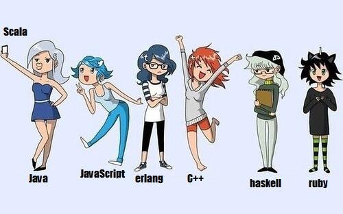
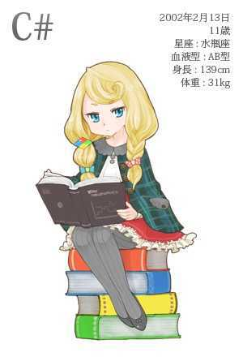
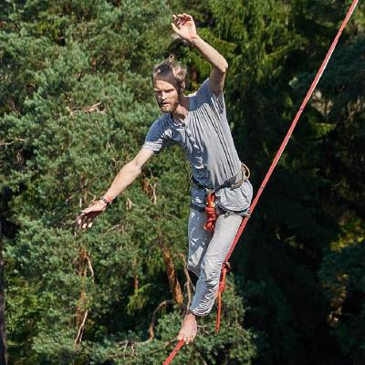
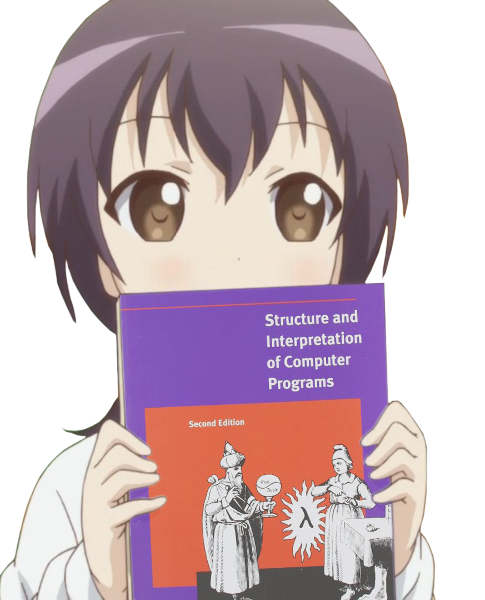

.center[ ### Let's build static type system for Erlang VM!  ### Now Erlang looks like Haskell, isn't it? ] --- .center[ ### What's wrong with Dialyzer? ] - optimistic type checking ```elixir @spec optimistic(integer()) :: integer() def optimistic(0), do: 1 def optimistic(_), do: :foo ``` <br> - representation of union of tuples as a tuple of unions ```elixir @spec unions() :: {nil, integer()} | {integer(), nil} def unions, do: {nil, nil} ``` <br> - nested types depth limits ```elixir @spec depth() :: {1,{2,{3,{4,5}}}} def depth, do: {1,{2,{3,{4,6}}}} ``` --- .center[ ### Gradual typing ] Gradual Typing is a method for mixing static and dynamic typing - Start out with a dynamically typed small program - As the program grow larger, gradually add type signatures to make it more statically typed <img src="img/python-chan.jpg" width="32%"> <img src="img/php-chan.jpg" width="32%">  --- .center[ ### Gradual type system ] 1) An ordinary static type system 2) A new special **any()** type for dynamic-typed parts 3) A **compatibility*** relation between types instead of **equality** relation .center[ #### *How compatibility works ] - For ordinary types, compatibility works like equality ```erlang integer() ~ integer() integer() ≁ boolean() ``` - The dynamic type any() is compatible to all types ```erlang integer() ~ any() any() ~ boolean() ``` - Compatibility it’s not transitive! ```erlang integer() ~ any() ~ boolean() integer() ≁ boolean() ``` --- .center[ ### Gradualizer https://github.com/josefs/Gradualizer ] - is implementation of gradual type system for Erlang VM - **uses standard Erlang type/spec notations and types** - without any type specs, no static typing happens - special **any()** type is used for all dynamic/untyped code (*any() ≠ term()*) - standard subtyping: **term()** is the biggest type, **none()** is the smallest - process communication is always dynamically typed --- .center[ ### Gradualizer contributors ] .left-column-big.center[ <br> https://github.com/josefs <br> **Josef Svenningsson** - main contributor  <br> https://github.com/zuiderkwast <br> **Viktor Söderqvist** - discussions on type systems and general support ] .right-column-big.center[ <br> https://github.com/gomoripeti <br> **Péter Gömöri** - hacking on the tool and general discussions <br> https://timcf.github.io/ <br> **Ilja Tkachuk** - minor improvements for Elixir compatibility ] --- .center[ ### Crystal Elixir wrapper around Gradualizer with mix task as user interface https://github.com/coingaming/crystal ] <br> ``` mix crystal ``` Command will check all modules in current mix project ``` mix crystal <ModuleName> ``` Command will check only given module .center[ #### Project status ] - Alfa-quality, work is in progress - Elixir-compatible - can handle primitive standard Erlang types - cross-module references are supported --- .center[ ### Live demo  ] --- class: center, middle # Thanks https://github.com/josefs/Gradualizer <br> ### [back to index](index.html)